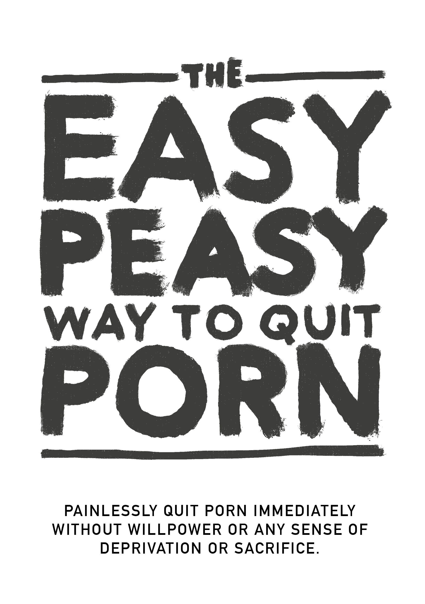

EasyPeasy
2026-08-31
Kapitulli 1 Prezantimi

MOS ANASHKALONI KAPITUJT
Ky libri burim i hapur do t’ju mundësoj të ndaloni pëdorimin e pornografis menjëherë, pa dhimbje, dhe përgjithmon pa vullnet ose ndonjë ndjenjë të privimit apo sakrific. Nuk do të vëndos ndonjë gjykim, siklet, ose presion për t’iu nënshtruar masave të dhimbshme.
Në fakt, nuk ka absolutisht nevojë për të reduktuar përdorimin tuaj gjatë leximit; duke bërë kështu është në të vërtet e dëmshme.
Ju mund të jeni të shqetësuar për vetë mendimin, ose një nga miliona në mënyrë aktive përpjekje për të ndaluar. Po të jetë kështu, ndoshta ajo që keni lexuar tashmë bie ndesh me gjithçka që ju është thënë ndonjëherë, por pyesni veten nëse ajo që ju është thënë ka funksionuar? Nëse do të ishte, nuk do ta lexonit fare këtë libër.
Ndoshta identifikoheni me pyetjet e mëposhtme:
A kaloni shumë më tepër kohë duke parë pornografi nga sa keni menduar fillimisht?
A jeni të pasuksesshëm në përpjekjet për të ndaluar ose kufizuar konsumimin tuaj të pornografisë?
A ka ndërhyrë koha e kaluar duke parë pornografi apo ka pasur përparësi ndaj angazhimeve, hobive apo marrëdhënieve personale apo profesionale në jetën tuaj?
A bëni gjithçka për të mbajtur sekret konsumin tuaj të pornografisë (p.sh. fshirjen e historisë së shfletuesit, gënjeshtrën për shikimin e pornografisë)?
A ka shkaktuar probleme të rëndësishme në marrëdhëniet intime shikimi i pornografisë?
A përjetoni një cikël zgjimi dhe kënaqësie para dhe gjatë konsumimit të pornografisë, të ndjekur nga ndjenja turpi, faji dhe pendimi më pas?
A kaloni sasi të konsiderueshme të kohës duke menduar për pornografinë, edhe kur nuk e shikoni atë?
A ka shkaktuar shikimi i pornografisë ndonjë pasojë tjetër negative në jetën tuaj personale ose profesionale (p.sh. mungesa e punës, performanca e dobët, marrëdhëniet e neglizhuara, problemet financiare)?
Nëse jeni një përdorues pornografie që varet prej saj për masturbim ose seks fare dhe për çfarëdo arsye, gjithçka që duhet të bëni është të lexoni më tej. Nëse jeni këtu për një të dashur, gjithçka që duhet të bëni është ta bindni që ta lexojnë këtë libër. Por nëse nuk jeni në gjendje t’i bindni, lexoni vetë librin. Kuptimi i metodës ndihmon në përcjelljen e mesazhit dhe parandalimin e fëmijëve tuaj që të fillojnë. Mos u mashtroni nga fakti se ata nuk kanë qasje në të tani - të gjithë bëjnë përpara se të fiksohen.
Rreth librit
Ky libër është një version i rishkruar i një rishkrimi të Allen Carr’s EasyWay to Smoking për pornografi, është falas dhe me burim të hapur dhe i licencuar sipas CC-BY-SA. Suksesi i tij qëndron në themelin që ju:
MOS ANASHKALONI KAPITUJT
Kur hapni një bllokues kombinimi, duhet të vendosni numrat në rendin e duhur. Varësia nuk është ndryshe.
Personalisht, versioni origjinal Google Sites (nuk është shkruar nga unë) ndryshoj jetën time. Nëse jeni diçka si shumica e njerëzve, keni zbuluar pornografinë në moshë relativisht të re dhe e keni përdorur atë që atëherë. Derisa u përplas me letërsinë dërrmuese - por disi të censuruar - paralajmëruese për rreziqet. Ashtu si unë, ju ndoshta keni pasur sukses me periudha të gjata të ndryshme, por gjithmonë në fund iu nënshtruat dëshirave iluzore. Kam kënaqësinë të raportoj se kjo metodë funksionon krejtësisht ndryshe dhe ka qenë e vetmja metodë që ka funksionuar.
Ose ndoshta, ju jeni lidhur me këtë libër nga një palë e interesuar dhe jeni skeptikë. Së pari, faleminderit që të paktën e keni parë. Kjo do të zgjerohet së shpejti, por ju lutemi kujtoni shkurtimisht herën e parë që keni parë pornografi. A e prisnit që do t’i ktheheshit asaj për pjesën tjetër të jetës tuaj? Sipas studimeve të mia joformale mbi këtë çështje (ngacmimi i miqve për të lexuar këtë libër), EasyPeasy është po aq efektiv për përdoruesit e rastësishëm të pornografisë sa edhe për ata që janë shumë të varur. Nuk është shumë e gjatë, me shanse të larta për fitime të mëdha, kështu që ju lutem të vazhdoni të lexoni.
Metoda e përshkruar në këtë hackbook është:
E menjëhershme.
Po aq efektive për përdoruesit e rëndë dhe të rastësishëm njësoj.
Nuk shkakton dhimbje të këqija të tërheqjes.
Nuk ka nevojë për vullnet.
Nuk kërkon trajtim shoku, ndihmës ose mashtrime.
Nuk do t’ju bëjë që ta zëvendësoni këtë varësi me varësi të tjera, të tilla si ngrënia e tepërt, pirja e duhanit ose pirja.
Përgjithmonë.
Ju mund ta keni të pamundur ta besoni këtë, por kjo ndjenjë është jehonë nga shumë njerëz.
“Kjo është puna kryesore mbi varësinë ndaj pornografisë”
— Ndonjë djalë në reddit që nuk mund ta gjej, mos mendo se lojëra fjalësh ishte e qëllimshme.
“Unë kam qenë i varur për 10 vjet. Ato 10 vjet isha i gjymtuar nga depresioni, dyshimi, ankthi dhe frika e sekretit tim. Pas çdo seance, e urreja veten, dhe pas çdo diete pornografike u ktheva në rrëshqitje uji në asnjë kohë. Megjithatë, ky libër më ndihmoi të ndaloja. Unë kam qenë gjithmonë në mbrojtje kundër pornografisë në të kaluarën. Tani, pasi e kam lexuar këtë libër dy herë, jam në ofensivë. Pornografia nuk ka kontroll mbi mua dhe duket si një shaka e trishtuar tani.”
— u/DeepNewt
“Para disa ditësh mbusha 20 vjeç. Për herë të parë pas një kohe shumë të gjatë, e kalova ditëlindjen time të lirë nga kurthi i pornografisë, dhe e gjitha falë këtij libri që ndesha rastësisht vetëm disa muaj më parë. Para kësaj, kisha shpenzuar kaq shumë kohë duke u përpjekur të heqja dorë nëpërmjet mjeteve tradicionale, dhe përjetova kaq shumë trazira të brendshme dhe e etiketova veten përgjithmonë si një i varur. Libri më zgjidhi të gjitha këto. Aty ku më parë kisha frikë se nuk kisha kontroll mbi veten, edhe kur pa e ditur tashmë e kisha rrahur përbindëshin e vogël, tani mund të krenohem duke kuptuar se nuk kam nevojë të jem më një i varur.
Unë nuk kam vërtet një arsye për ta postuar këtë, thjesht ndjeva se duhej ta vendosja diku tjetër përveç në kokën time, sepse do të thotë shumë për mua. Nëse po e lexoni këtë dhe po mendoni të lexoni ose rekomandoni librin, merrni nga unë se funksionon më mirë se çdo metodë tjetër atje. Këshilla ime më e madhe është të mbaj shënime, gjë që tingëllon qesharake, por me të vërtetë më ndihmoi të forcoj disa ide.”
— u/Suspicious_Web_4594
“based”
— anon, /fit/
1.1 Paralajmërim
Nëse prisni që ky libër t’ju ‘frikësojë’ që të hiqni dorë nga përdorimi i problemeve të ndryshme shëndetësore që rrezikojnë përdoruesit, të tilla si mosfunksionimi seksual (përfshirë disfunksionin erektil të shkaktuar nga pornografia), zgjimin e pasigurt, humbjen e interesit për partnerët e vërtetë seksuale, hipofrontalitetin e trurit dhe akuza verbuese se është një zakon i ndyrë, i neveritshëm dhe ti je një kandil deti budalla, pa kurriz, me vullnet të dobët, do të zhgënjehesh shumë. Ato taktika nuk më ndihmuan kurrë të largohesha dhe nëse do të të ndihmonin ty, do ta kishe lënë tashmë.
Metodat konvencionale të heqjes dorë mbrojnë duke përdorur vullnetin ose metodat e zëvendësimit të “dietës pornografike”, si “përdorimi një herë në ditë” dhe reduktimi i konsumit. Disa webfaqe listojnë kërkime të rishikuara nga kolegët rreth neurotransmetuesve dhe neuroplasticitetit, dhe ndërsa këto faqe janë informuese, shumë janë të vetëdijshëm për rreziqet shëndetësore dhe zgjedhin të mos bëjnë asgjë, megjithëse një material i tillë zakonisht shmanget. Në fund të fundit, ato janë po aq joefektive pasi në fakt nuk heqin arsyet e përdorimit të pornografisë. Në fund të fundit, të kthesh diçka në një frut të ndaluar nuk është mënyra se si e trajton varësinë.
Kjo metodë, e quajtur EasyPeasy, funksionon ndryshe. Disa nga gjërat që do të thuhen mund të jenë të vështira për t’u besuar, por në kohën kur të keni mbaruar këtë libër, jo vetëm që do t’i besoni ato, por do të pyesni veten se si mund t’ju ishte larë truri për të besuar ndryshe.
Ekziston një keqkuptim i zakonshëm që ne zgjedhim të shikojmë pornografi. Të varurit nga pornografia (po, të varurit) jo më shumë zgjedhin të shikojnë pornografi sesa alkoolistët zgjedhin të bëhen alkoolikë, sesa të varurit nga heroina që zgjedhin të bëhen të varur nga heroina. Është e vërtetë që ne zgjedhim të nisim laptopin ose smartfonin, të ndezim shfletuesin dhe të vizitojmë ‘haremin’ tonë të preferuar në internet. Herë pas here zgjedh të shkoj në kinema, por sigurisht që nuk kam zgjedhur ta kaloj gjithë jetën time në kinema. Fillimisht, kurioziteti dhe natyra njerëzore më çuan atje, por nuk do të kisha filluar nëse do ta dija se do të bëhesha i varur, duke shkaktuar rënien e shëndetit, lumturisë dhe marrëdhënieve të mia. “Sikur të kisha dëgjuar për mosfunksionimin seksual në vizitën time të parë në atë faqe pornografike!”
Merrni një moment për të reflektuar, a keni marrë ndonjëherë vendimin ‘pozitiv’ që duhet/nevojitet pornografi për të masturbuar? Apo se duhet/nevojitet fantazi të shkaktuara nga pornografia për të shijuar seksin me partnerin tuaj? Apo, në periudha të caktuara të jetës suaj, nuk mund të shijonit një gjumë të mirë ose ndoshta edhe të kaloni një mbrëmje pas një dite të vështirë në punë pa surfuar për pornografi? Apo se nuk mund të përqendroheni apo të përballonit stresin pa të? Në cilën fazë vendosët që ju kishit nevojë për pornografi, se ju duhej përgjithmonë në jetën tuaj, duke u ndjerë i pasigurt, madje edhe i pushtuar nga paniku pa pornografi, pa haremin tuaj online?
Si çdo përdorues tjetër i pornografisë, ju jeni joshur në kurthin më të keq dhe delikat që njeriu dhe natyra kanë kombinuar ndonjëherë për të sajuar. Nuk ka asnjë person të gjallë, qoftë përdorues apo jo, që i pëlqen mendimi se fëmijët e tyre përdorin pornografinë për të përballuar apo për kënaqësi. Kjo do të thotë që të gjithë të varurit do të dëshironin të mos kishin filluar kurrë. Kjo nuk është befasuese: askush nuk ka nevojë për pornografi për të shijuar jetën ose për të përballuar stresin para se të fiksohet.
Në të njëjtën kohë, të gjithë përdoruesit dëshirojnë të vazhdojnë të përdorin. Në fund të fundit, askush nuk na detyron të hapim modalitetin incognito të shfletuesit tonë. Pavarësisht nëse e kuptojnë arsyen apo jo, janë vetëm përdoruesit që vendosin të trokasin në dyert e haremeve të tyre online.
Nëse do të kishte një buton magjik që përdoruesi mund të shtypte për t’u zgjuar mëngjesin tjetër, sikur të mos kishte hyrë kurrë në faqen e parë të tubit, të varurit e vetëm nesër do të ishin të rinjtë që ende ‘eksperimentonin’.
E vetmja gjë që na pengon ta lëmë është FRIKA! Frika e shkaktuar nga besimi se do të na duhet t’i mbijetojmë një periudhe të papërcaktuar mjerimi, privimi dhe dëshira e pakënaqur në mënyrë që të çlirohemi nga pornografia. Këto lindin nga besime irracionale, të mësuara dhe të fituara, të tilla si:
Masturbimi ose seksi që çon në orgazmë është gjëja e vetmja dhe më e rëndësishme në jetë.
Pornografia është ‘më e sigurt’ se seksi në jetën reale sepse pornografia nuk mund të më refuzojë.
Pornografia është edukative dhe e dobishme.
E drejta për një përvojë seksuale ‘superiore’.
Më shumë është gjithmonë më mirë.
Këto besime irracionale sjellin pasoja irracionale kur veprohet, duke përfshirë:
Adhurimi dhe obsesioni kur gjendet një ‘10/10 perfekte’.
Të perceptosh veten si një humbës nëse të mungon seksi, sikur të jetë gjëja më e rëndësishme në përvojën njerëzore.
Duke qëndruar për një 10 perfekte.
Të qenit tepër gjykues dhe kritik ndaj partnerëve të mundshëm.
Të detyrosh veten për të bërë seks nëse dëshiron apo jo.
Është frika se një natë e vetme do të jetë e mjerueshme, e kaluar duke luftuar impulse të pakontrollueshme. Frika se nata para provimeve do të jetë një natë nga ferri pa pornografi. Frika se nuk do të jemi kurrë në gjendje të përqendrohemi, të përballojmë stresin ose të jemi kaq të sigurt pa patericën tonë të vogël dhe se personaliteti dhe karakteri ynë do të ndryshojnë.
Por mbi të gjitha, kini frikë se “dikur një i varur, gjithmonë i varur”: se ne kurrë nuk do të jemi plotësisht të lirë, duke kaluar pjesën tjetër të jetës duke kërkuar orgazmën e herëpashershme të shkaktuar nga pornografia në momente të çuditshme. Nëse, siç bëra unë, ju keni provuar tashmë të gjitha mënyrat konvencionale për ta lënë duhanin dhe keni kaluar nëpër mjerimin dhe torturën e ‘metodës së fuqisë së vullnetit’, jo vetëm që do të prekeni nga kjo frikë, por do të jeni të bindur se ju kurrë nuk do të hiqni dorë.
Nëse jeni të frikësuar, të pushtuar nga paniku ose mendoni se nuk është koha e duhur për të hequr dorë, më lejoni t’ju siguroj se shqetësimi dhe paniku juaj nuk lehtësohen nga pornografia - janë shkaktuar prej saj. Ju nuk keni vendosur të bini në grackën e pornografisë, por si të gjitha kurthet, ajo është krijuar për të siguruar që të mbeteni të bllokuar. Pyesni veten, kur i keni parë ato fotot dhe videot e para pornografike, a keni vendosur të ktheheni për t’i parë ato për aq kohë sa jeni gjallë? Pra, kur do të hiqni dorë? Nesër? Vitin tjeter? Mos u tallni me veten! Kurthi është krijuar për t’ju mbajtur për gjithë jetën. Pse tjetër mendoni se të gjithë këta të varur të tjerë nuk e lënë dorën para se kjo t’u ‘vrasë’ jetën?
Unë i jam referuar një butoni magjik; EasyPeasy funksionon njësoj si ai buton magjik. Më lejoni ta bëj të qartë, EasyPeasy nuk është magji, por për mua dhe të tjerët që e kanë gjetur kaq të lehtë dhe të këndshme të heqin dorë, duket se është kështu!
Paralajmërimi është si më poshtë: Kjo është një situatë e pulës dhe vezëve: çdo i varur dëshiron të heqë dorë dhe çdo i varur mund ta ketë të lehtë dhe të këndshme të heqë dorë. Është vetëm frika që i pengon përdoruesit të përpiqen të largohen. Fitimi i vetëm më i madh është të çliroheni nga ajo frikë, por nuk do të jeni të lirë nga ajo frikë derisa të përfundoni librin. Përkundrazi, frika juaj mund të rritet ndërsa vazhdoni të lexoni, gjë që mund t’ju pengojë ta përfundoni atë. Merre këtë koment nga një grua.
“Sapo mbarova së lexuari EasyPeasy. E di që kanë kaluar vetëm katër ditë, por ndihem shumë mirë, e di që nuk do të kem nevojë të përdor më pornografi. Fillova të lexoj librin tuaj për herë të parë pesë muaj më parë, kalova në gjysmë të rrugës dhe më zuri paniku. E dija që nëse do të vazhdoja të lexoja do të më duhej të ndaloja. A nuk isha budalla?”
Ju nuk keni vendosur të bini në kurth, por jini të qartë në mendjen tuaj: nuk do të shpëtoni prej tij nëse nuk merrni vendimin afirmativ për ta bërë këtë. Ju tashmë mund të jeni duke u lodhur për të hequr dorë, ose mund të jeni të shqetësuar për vetë mendimin, por sido që të jetë, ju lutemi mbani parasysh: JU NUK KENI ASGJË PËR TË HUMBUR!
Nëse në fund të librit vendosni se dëshironi të vazhdoni të përdorni pornografi për masturbim ose seks, nuk ka asgjë që ju pengon ta bëni këtë. Ju as nuk duhet të reduktoni ose të ndaloni përdorimin e pornografisë gjatë leximit të librit dhe mbani mend, nuk ka asnjë trajtim shoku. Përkundrazi, kam vetëm një lajm të mirë për ju. A mund ta imagjinoni se si u ndje Andy Dufresne kur më në fund u liruar nga burgu Shawshank? Kështu u ndjeva kur shpëtova nga kurthi i pornografisë dhe kështu ndjehen ish-përdoruesit që kanë përdorur EasyPeasy. Deri në fund të librit, kështu do të ndiheni! Shkoni për të!
Më në fund…
Të gjithë mund ta kenë të lehtë dhe të këndshme të lënë pornografinë, duke përfshirë edhe ju! Gjithçka që duhet të bëni është të lexoni pjesën tjetër të këtij libri me mendje të hapur; sa më shumë të kuptoni, aq më lehtë do të jetë. Edhe nëse nuk kuptoni asnjë fjalë, nëse ndiqni udhëzimet, do ta keni të lehtë. Më e rëndësishmja, nuk do ta kaloni jetën duke lagur për pornografi ose duke u ndjerë i privuar, dhe deri në fund të librit misteri i vetëm do të jetë arsyeja pse e keni bërë për kaq gjatë.
Me EasyPeasy, ka vetëm dy arsye për dështim.
Dështimi në zbatimin e udhëzimeve. Disave do t’u bezdis fakti që libri është kaq dogmatik në lidhje me rekomandime të caktuara, të tilla si të mos përpiqeni të shkurtoni ose përdorni zëvendësues. Sigurisht që nuk e mohoj që ka shumë që ia kanë dalë të ndalojnë përdorimin e hileve të tilla, por ia kanë dalë me pavarësisht dhe jo për shkak të tyre. Disa njerëz mund të bëjnë dashuri duke qëndruar në shtrat të varur, por kjo nuk është mënyra më e lehtë. Numrat për hapjen e bravës së këtij kurthi janë në këtë libër, por ato duhet të përdoren në rendin e duhur: duke shkuar nga një kapitull në tjetrin dhe jo duke anashkaluar kapitujt.
Dështimi për të kuptuar. Mos merrni asgjë si të mirëqenë, vini në dyshim jo vetëm atë që ju thuhet, por pikëpamjet tuaja dhe atë që shoqëria ju ka thënë për seksin, pornografinë në internet dhe varësinë. Për shembull, ata që besojnë se është thjesht një zakon, pyesin veten pse zakone të tjera - disa prej të cilave janë të këndshme - janë të lehta për t’u thyer, ndërsa një zakon që ndjehet i tmerrshëm, kushton energji, kohë dhe burrëri është kaq i vështirë për t’u thyer. Ata që besojnë se ju pëlqen pornografia, pyesni veten pse gjëra të tjera që janë pafundësisht më të këndshme mund t’i merrni ose t’i lini. Pse duhet të keni pornografi, paniku nëse nuk keni?
EasyPeasy është gati t’ju japë njohuri se sa e lehtë dhe e këndshme është të hiqni dorë nga pornografia. Si shumë të tjerë, një nga triumfet e mia më të mëdha në jetë ka qenë ikja nga kurthi i pornografisë. Nuk ka nevojë të ndiheni të dëshpëruar, përkundrazi, ju jeni gati të arrini diçka që çdo përdorues në planet do të donte ta arrinte: LIRI!
** KUJTOHUNI, MOS I ANASHKALO KAPITUJT.**
Disa terme para se të filloni: PMO: Cikli i pornografisë, masturbimit dhe orgazmës. Haremi Online: Uebfaqe që strehojnë porno në internet me shpejtësi të lartë.
1.2 Këshilla për lexim dhe shënime të vogla të fundit
Mos e lexoni këtë libër si një libër normal, është shumë i shkurtër dhe duhet të jeni në gjendje ta përfundoni brenda disa orësh. Shumica e njerëzve përfitojnë nga theksimi ose marrja e shënimeve dhe zakonisht rekomandojnë rileximin të disa herë për të ngurtësuar plotësisht mësimet.
Pse hackbookin? Sepse Allen Carr ka kohë që ka vdekur dhe institucionet që ai ka formuar nuk e listojnë pornografinë në internet si një nga varësitë që ofrojnë trajtim. Unë nuk fitoj monetare apo ndryshe.
Përgjatë këtij libri, unë, Hakautori origjinal dhe Allen Carr do të shfaqen në mënyrë transparente në mënyrë që t’ju ofrojmë një metodë unike dhe bindëse për t’u larguar lehtësisht dhe pa dhimbje.
Hackbook: Një libër i bazuar dhe i hakuar nga një libër tjetër. Autori origjinal është vlerësuar plotësisht.
Ekzistojnë gjithashtu një sërë komunitetesh për hackbook-un, por rekomandohet t’i kontrolloni ato vetëm pasi të keni mbaruar së lexuari librin.
urbit - ~mislyr-midnyt/coomer (tani në fakt funksionon!! metoda më e mirë e mundshme e kontaktit, përdorni këtë ju lutem) | arkivi i memeve coomer | analizat | matrix | discord | reddit | formulari i reagimit
Përkujtues i shpejtë: MOS ANASHKALONI KAPITUJT
Unë do t’ju uroj fat, por pasi së shpejti do të mësoni, nuk keni nevojë për të.
Ndjenjë të mirë,
Hackauthor²

Kjo punë është e licencuar sipas një Creative Commons Attribution-ShareAlike 4.0 International License. Kodi është GPLv3.